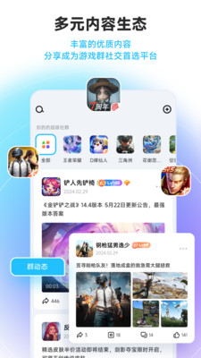
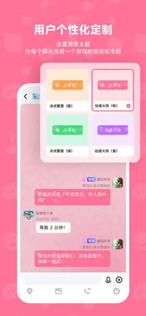

Whack 是什么？从零开始带你玩转这款 AI 游戏社群工具
第一次接触 Whack 的游戏公会群主看过来，这篇带你从下载到跑通签到、超管、子群三大功能，用大白话讲清每一步。
Whack 到底是干嘛的？一个游戏公会的"装修队"
想象一下：你拉了一个游戏开黑群，二十几个人，消息刷得飞快，新人进来找不到组织，老人嫌吵潜水，你一个人要管广告、管吵架、还要记得每天发签到红包——忙不过来还容易得罪人。
Whack 就是专门给游戏公会做的一套 AI 社群装修队——它的官网上有完整功能列表。它在你的群里加一个 AI 机器人（人工智能自动回复的小程序，不是真人），帮你自动签到、自动欢迎新人、自动拦违规消息，还能帮你把一个大群拆成主群加子群的多层结构，让指挥频道和闲聊频道各归各位，互不打扰。
这篇能带你从完全不懂到用起来，不需要任何基础。
五分钟上手：从下载到跑通的最短路径
第一步很简单：安装包从下载拿，用手机号注册登录就行。进来之后点创建社群的按钮，填群名、选游戏类型标签，主群就建好了。
接下来是最关键的一步——把 AI 机器人打开。群设置里往下翻，找到 AI 机器人那一栏，开关一拨，一个带表情的小机器人头像就出现在群成员列表里了。别担心配置复杂，先开着默认设置就能用，后面再慢慢调。
到这里群已经能跑了。拉几个朋友进来，让新人点一下群设置里的签到按钮，AI 机器人会自动回复一条带积分的消息。第一次感受到它在干活了吧？
上手后先玩这三个功能
一、签到：让水群变成每日习惯
进群设置，找到 AI 机器人的互动插件，点开签到开关。配一下奖励数值，比如每次签到给 5 积分，连续签到加成也可以开——连续 7 天多给 3 倍奖励。
你会发现什么？AI 机器人每天会在群里推送签到榜单，显示今日签到人数和连续签到冠军。群里会慢慢出现一种微妙的打卡竞争感——有人断签了会在群里喊一声"今天忘了，补签还有机会吗"，潜水的成员也会冒头点一下签到，至少留个痕迹。
签到还能和其他玩法联动。连续签到 5 天可以获得一次免排队点歌权，每日签到成员可以参与专属福袋抽奖，连续签到达到一定天数甚至能自动获得贵族头衔。别小看这些联动，它们是让群活起来的关键，更多玩法组合可以去Whack文档查。
二、超管：把管群压力分给靠谱的朋友
群设置里有成员管理，点进去就能任命超管。选两个你信得过的朋友（比如公会的战队队长和后勤负责人），给他们超管权限。
你会发现什么？超管现在可以审批入群申请、撤回违规消息、执行禁言，甚至从 v1.5.20 版本开始可以直接移除踢人了。你不用再 24 小时盯着群里谁又吵架了、谁又发广告了，超管分担掉大部分日常管理，你只需要管群名、群头像、子群结构这些群主独有的事。
群主和超管的核心区别在于，群主可以任命和撤销超管、修改群的基本信息、解散整个群、调整子群架构，这些权限超管碰不到。所以放心放权，不会出乱子。
三、群内群：把一个大群拆成主群加频道
群设置里找到群结构或子群管理，点创建新的子群。给子群起个清楚的名字，比如"指挥频道"或"新人频道"，写一句简介，选个游戏类型标签，再设置一下入群规则（申请审核还是群主直接邀请）。
你会发现什么？主群发总公告和版本通知，指挥频道只有战队核心成员讨论战术复盘，新人频道由 AI 机器人自动发入门攻略和常见问题。每个子群还能独立开 AI 机器人、独立任命超管，互不干扰。百人以上的公会再也不会乱成一锅粥了。
当然，群规模 20 人以下、全是熟人、定位纯粹的小群就不用折腾分群了，一个群够用，分群反而增加跳转成本。

小白最常问的三个问题
Q：贵族身份是什么？要不要花钱？
贵族身份是会员体系里的视觉权益。拥有贵族身份的用户加入任何群聊时，AI 机器人会自动触发一个带特效的欢迎动画，群里所有人都能看到。它通常和 VIP 或 SVIP 会员挂钩，买了会员就自动激活，会员到期自动失效，不是独立购买的东西，相当于会员送的群内出场特效。
除了入群特效，贵族身份通常还伴随专属表情和贴纸、部分 AI 互动插件的优先权益、群内贵族等级标识这些额外福利。群主也可以做一些自定义设置，比如允许或禁止贵族入群特效、把贵族身份作为连续签到榜冠军的临时奖励。
Q：为什么签到入口找不到？
大概率是群主还没开签到插件。签到开关在群设置的 AI 机器人互动插件那一栏，是群主控制的，普通成员没有权限开。先确认一下你的版本号够不够新，v1.5.10 之后签到入口更突出，找不到就让群主去开一下。
Q：子群的 AI 机器人和主群是同一个吗？
不是。每个子群有独立的 AI 机器人配置面板，开关和规则可以各管各的。主群开了签到不代表子群自动有，反过来也一样，这样每个频道可以根据自己的需要配不同的 AI 功能。比如主群开签到和福袋，指挥频道只开点歌和战报，互不干扰。

最后说一句
Whack 上手门槛真的不高，装好、开 AI 机器人、建主群、拉人，五分钟就能跑起来。等你跑顺了，再慢慢调签到奖励、加超管、拆子群，AI 会帮你把大部分重复劳动接过去。
想进阶的话，下一步可以试试把签到和点歌、福袋这些互动插件联动起来，或者研究一下贵族身份的自定义玩法，让群里的互动玩出花样来。这篇用到的功能细节我同步维护在GitHub、Gitee和GitCode三个仓库，国内网络选 Gitee 或 GitCode 访问会更顺畅。